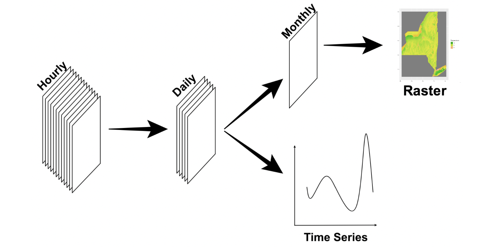
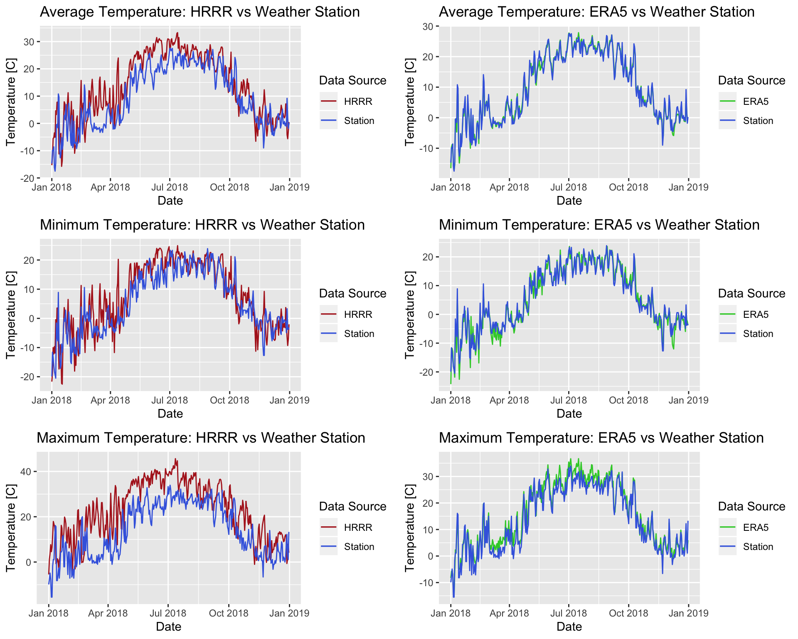
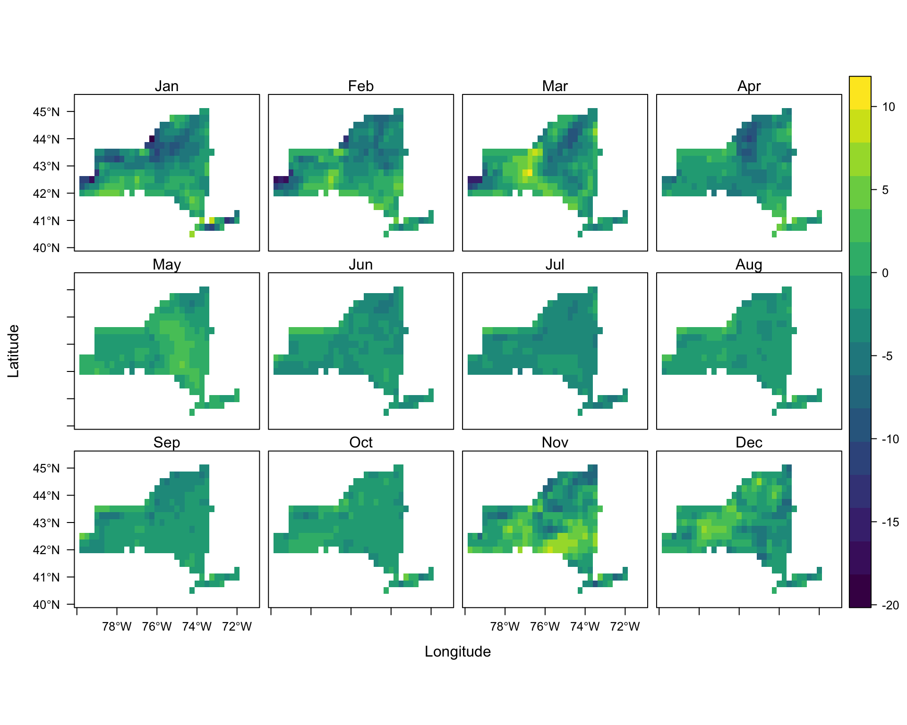

COPMARISON OF DIFFERENT CLIMATE DATASETS
Nima Masoudvaziri, Zolal Ayazpour
Introduction
When studying atmospheric-related phenomena, one may use observations (like data from weather stations) or simulated datasets based on numerical models. Also, one may want to investigate and explore a phenomenon or behavior which has happened already in the past, or may be interested in prediction of an event or behavior. As a result, different datasets should be incorporated given the nature of the study. Essentially, there are three types of models: Forecast, Analysis and Reanalysis. Forecast models are comprised of physics-based equations and propogate an atmospheric state forward in time, i.e. given the vaules of different parameters at time t, one can calculate the values for time t+dt. Analysis basically does the same thing, however instead of the prediction by physics, it takes place by statistical methods. In other words, given the observations at some locations, one can come up with an estimation for different parameters at locations that there is no observation available. There are different physics-based models and also different assumptions and methodologies in data assimilation, which experience modifications along the time. Besides, instrumnetation also changes as time passes and technology improves. Reanalysis takes all these variations into account and yield a comprehensive and coherent dataset over the globe. It is supposedly the best dataset for looking into the past weather. More infomation can be found here.
Definition of the Problem
For this study, among different publicly available models, two will be considered. The main objective of the work is to compare their dataset for some primary climatological variables (precipitation, temperature, wind, snow), within both temporal and spatial scopes. One of the models is called High Resolution Rapid Refresh (HRRR) which is a forecast model (with forecast length of 18 hours) generating data to a 3-km resolution grid, hourly. More information about HRRR can be find here. The other model to use is ERA5 which is a climate reanlysis dataset of up to 3 month before with 30-km resolution at an hourly frequency. More information about ERA5 dataset can be found here. Summry of the models are provided in the following table.
| Model | Type | Resolution | Frequency |
|---|---|---|---|
| HRRR | forecast | 3 km | hourly |
| ERA5 | reanlaysis | 30 km | hourly |
The main reason for choosing these two models is that one of them has a significantly higher resolution and, on the other hand, the other is supposedly based on a more powerful model.
Materials and methods
Materials
Each model has its own archive and support, accessible by public. HRRR data can be found following this instruction, and ERA5 can be downloaded following this instruction. Also, observations from weather stations can be found from NOAA LCD Tool.
Methods
The output of HRRR and ERA5 are summarized in GRIB2 and NetCDF formats, respectively. Considering the State of New York as the case study, the output of both models are loaded in the working directory for one year. They are meteorological datasets, including precipitation, temperature, wind, and snow, which are mapped at specific grid cells. Using the raster package, the output dataset of both models can be read. Dealing with the spatial dataset, in addition to raster package, sf and sp packages are also useful to manage the data. In order to compare two models, first, the output dataset of each model needs to be mapped over the same grid cells. As a result, two raster objects will be produced to project values of meteorological parameters on the same grid cells. In the next step, the hourly dataset will be aggregated to produce data at daily and monthly resolution, and their statistical characteristics are calculated and plotted applying ggplot2. In this study, the output of both models will be visualized for each meteorological parameter over the year 2018 as a gif using gganimate package to provide a general understanding of the models’ outputs. Furthermore, the difference between both datasets will be investigated by mapping the difference over the case study and visualizing the result as new plots. In addition, the temporal difference behavior between these two models will be studied by plotting both dataset as time series over two years.
Packages
Here is the required packages for this project.
library(raster) # managing rasters
library(rgdal) # managing rasters
library(sf) # managing rasters
library(lubridate) # managing date formats
library(dplyr) # managing data
library(ggplot2) # plots
library(ggpubr) # plots
library(rasterVis) # plots
library(viridisLite)# plots
library(xts) # timeseries plots
library(dygraphs) # timeseries plots
library(gridExtra) # timeseries plots
library(rnoaa) # NOAA data
library(png) # load png
knitr::opts_chunk$set(cache=TRUE) # cache the results for quick compilingPreprocessing
The following code loads the ERA5 data and preprocesses them, creating the rasters and dataframes that we need for visualization and analysis. Each file of this dataset contains 24 rasters (correponding to 24 hours of a day) for the variable that you specify. User should input the year, name of the variable, coordinates of the weather station and directory of the files.
runn=F
if(runn){
Yr<- 2018
par<- 'skt' # the variable you are interested in,
# and you have it available on your disk
xy= cbind(-78.7358, 42.9408) # Coordinates of the weather station
# this is Buffalo's Niagara International Airport
# This data frame will be used for time-series plots
daily_df= data.frame(Date= as.Date(character()),
Mean= numeric(),
Min= numeric(),
Max= numeric(),
stringsAsFactors = FALSE)
monthly_bricks= list()
monthly_mean= list()
monthly_min= list()
monthly_max= list()
for(y in c(Yr)){
for(M in 1:12){
month_path= paste0('PATH TO THE FILES','/Y',Yr,'/M',
sprintf("%02d", as.numeric(M)),'/')
ls= list.files(month_path, recursive = TRUE)
l= length(ls)
n= nrow(daily_df)
everyday_bricks= list()
for(i in c(1:l)){
f_name= paste0(month_path,ls[i])
day_brick= brick(f_name, varname= par)
daily_df[n+i,1]= as.Date(substr(f_name,nchar(f_name)-10,nchar(f_name)-3), "%Y%m%d")
daily_df[n+i,2]= extract(calc(day_brick, mean), xy, method='simple')
daily_df[n+i,3]= extract(calc(day_brick, min), xy, method='simple')
daily_df[n+i,4]= extract(calc(day_brick, max), xy, method='simple')
everyday_bricks[i]= day_brick
}
# Rasters below will be used to generate maps.
monthly_bricks[M]= brick(everyday_bricks)
monthly_mean[M]= calc(monthly_bricks[[M]],mean)
monthly_min[M]= calc(monthly_bricks[[M]],min)
monthly_max[M]= calc(monthly_bricks[[M]],max)
}
}
}The following code loads the HRRR data and preprocesses them, creating the rasters and dataframes that we need for visualization and analysis. Each file of this dataset contains a raster (correponding to an hour of a day) for the variable that you specify. Again, user should input the year, name of the variable, coordinates of the weather station and directory of the files.
img <- readPNG("./Data/Framework.png")
grid::grid.raster(img)
runn=F
if(runn){
Yr<- 2018
par<- 'TMP_surface' # the variable you are interested in,
# and you have it available on your disk
xy= cbind(-78.7358, 42.9408) # Coordinates of the weather station
# this is Buffalo's Niagara International Airport
ny <- extent(-81, -70, 39.5, 46) # bounding box of the New York State
# This data frame will be used for time-series plots
for(Y in c(Yr)){
daily_df= data.frame(Date= as.Date(character()),
Mean= numeric(),
Min= numeric(),
Max= numeric(),
stringsAsFactors = FALSE)
monthly_bricks= list()
monthly_mean= list()
monthly_min= list()
monthly_max= list()
for(M in c(1:12)){
data_path= paste0(getwd(),'/')
month_path=paste0('HRRRfromPando_',Y,sprintf("%02d", as.numeric(M)))
par_path=paste0(par)
ls= list.files(data_path,month_path)
ls=ls[grep(par_path,ls)]
l= length(ls)/24
n= nrow(daily_df)
everyday_bricks=list()
for(D in c(1:l)){
day_path=paste0(month_path,sprintf("%02d", as.numeric(D)))
ls_day= ls[grepl(day_path,ls)]
l_hr=length(ls_day)
day_list=list()
for(hr in c(1:l_hr)){
file_path=paste0(data_path,ls_day[hr])
day_list[hr]=try(raster(file_path),silent=TRUE)
}
for(fn in day_list){
if (is.character(fn)){
day_list[which(day_list==fn)]=NULL
}
}
day_brick=brick(day_list)
f_name= paste0(day_path)
daily_df[n+D,1]= as.Date(substr(f_name,nchar(f_name)-7,nchar(f_name)), "%Y%m%d")
daily_df[n+D,2]= extract(calc(day_brick, mean), xy, method='simple')
daily_df[n+D,3]= extract(calc(day_brick, min), xy, method='simple')
daily_df[n+D,4]= extract(calc(day_brick, max), xy, method='simple')
everyday_bricks[D]= day_brick
}
# Rasters below will be used to generate maps.
monthly_bricks[M]= brick(everyday_bricks)
monthly_mean[M]= crop(projectRaster(
calc(monthly_bricks[[M]],mean),crs="+proj=longlat +datum=WGS84 +ellps=WGS84
+towgs84=0,0,0"), ny)
monthly_min[M]= crop(projectRaster(
calc(monthly_bricks[[M]],min),crs="+proj=longlat +datum=WGS84 +ellps=WGS84
+towgs84=0,0,0"), ny)
monthly_max[M]= crop(projectRaster(
calc(monthly_bricks[[M]],max),crs="+proj=longlat +datum=WGS84 +ellps=WGS84
+towgs84=0,0,0"), ny)
}
}
}Visualiziation of HRRR and ERA5
us <- st_read("./Data/tl_2017_us_state/tl_2017_us_state.shp")
ny_bound <- us %>%
filter(STUSPS=="NY")
#Raster
monthly_mean_ERA5= list()
monthly_min_ERA5= list()
monthly_max_ERA5= list()
monthly_mean_HRRR= list()
monthly_min_HRRR= list()
monthly_max_HRRR= list()
monthly_mean_HRRR_resample=list()
monthly_min_HRRR_resample=list()
monthly_max_HRRR_resample=list()
monthly_mean_Diff=list()
monthly_min_Diff=list()
monthly_max_Diff=list()
for (M in c(1:12)){
monthly_mean_ERA5[M] = raster(paste0(getwd(),'/Data/monthly_mean_ERA5_',M,'.tif'))
offs(monthly_mean_ERA5[[M]])=-273.15
monthly_min_ERA5[M] = raster(paste0(getwd(),'/Data/monthly_min_ERA5_',M,'.tif'))
offs(monthly_min_ERA5[[M]])=-273.15
monthly_max_ERA5[M] = raster(paste0(getwd(),'/Data/monthly_max_ERA5_',M,'.tif'))
offs(monthly_max_ERA5[[M]])=-273.15
monthly_mean_HRRR[M] = raster(paste0(getwd(),'/Data/monthly_mean_HRRR_',M,'.tif'))
monthly_min_HRRR[M] = raster(paste0(getwd(),'/Data/monthly_min_HRRR_',M,'.tif'))
monthly_max_HRRR[M] = raster(paste0(getwd(),'/Data/monthly_max_HRRR_',M,'.tif'))
monthly_mean_HRRR_resample[M] <- resample(monthly_mean_HRRR[[M]],monthly_mean_ERA5[[M]],method="bilinear")
monthly_min_HRRR_resample[M] <- resample(monthly_min_HRRR[[M]],monthly_min_ERA5[[M]],method="bilinear")
monthly_max_HRRR_resample[M] <- resample(monthly_max_HRRR[[M]],monthly_max_ERA5[[M]],method="bilinear")
monthly_mean_Diff[M] <- monthly_mean_HRRR_resample[[M]]-monthly_mean_ERA5[[M]]
monthly_min_Diff[M] <- monthly_min_HRRR_resample[[M]]-monthly_min_ERA5[[M]]
monthly_max_Diff[M] <- monthly_max_HRRR_resample[[M]]-monthly_max_ERA5[[M]]
}
# comparing resolutions
# p1=gplot(mask(crop(monthly_mean_HRRR[[10]],extent(ny_bound)),ny_bound))+
# geom_tile( aes( fill=value ) )+
# scale_fill_continuous(type='viridis',name="Temperature")+
# xlab(NULL)+
# ylab(NULL)+
# ggtitle('HRRR (3 km)')
p1<- levelplot(mask(crop(monthly_mean_HRRR[[10]],extent(ny_bound)),ny_bound),
col.regions=viridis, margin=F, main=list('HRRR (3 km)'))
p2<- levelplot(mask(crop(monthly_mean_ERA5[[10]],extent(ny_bound)),ny_bound),
col.regions=viridis, margin=F, main=list('ERA5 (25 km)'))
ggarrange(p1,p2,nrow=1)Resample from fine to coarse, or coarse to fine?
# comparing resample methods (from fine to coarse and vise versa)
HRRR_to_ERA5_resample <- resample(monthly_mean_HRRR[[10]],monthly_mean_ERA5[[10]],method="bilinear")
monthly_mean_Diff_1 <- HRRR_to_ERA5_resample-monthly_mean_ERA5[[10]]
ERA5_to_HRRR_resample <- resample(monthly_mean_ERA5[[10]],monthly_mean_HRRR[[10]],method="bilinear")
monthly_mean_Diff_2 <- monthly_mean_HRRR[[10]]-ERA5_to_HRRR_resample
p1<- levelplot(mask(crop(monthly_mean_Diff_1,extent(ny_bound)),ny_bound),
col.regions=viridis, margin=F, main=list('Difference by resampled HRRR'))
p2<- levelplot(mask(crop(monthly_mean_Diff_2,extent(ny_bound)),ny_bound),
col.regions=viridis, margin=F, main=list('Difference by resampled ERA5'))
ggarrange(p1,p2,nrow=1)Results
HRRR_df <- read.csv2(paste0('./Data/daily_df_HRRR.csv'))
ERA5_df <- read.csv2(paste0('./Data/daily_df_ERA5.csv')) %>%
mutate(Mean=Mean-273.15,Min=Min-273.15,Max=Max-273.15)
station_df=meteo_tidy_ghcnd("USW00014733",
date_min = "2018-01-01",
date_max = "2018-12-31",
var = c("TMAX","TMIN","TAVG"),
keep_flags=T) %>%
select(c(2,12:14)) %>%
mutate(tavg=tavg/10,tmin=tmin/10,tmax=tmax/10) %>%
mutate(date=as.Date(date)) %>%
select(c(1,2,4,3))
dfs<- data.frame(Date=as.Date(0:364, origin='2018-01-01'),
Mean=numeric(365),
Min=numeric(365),
Max=numeric(365))
for(i in 1:nrow(station_df)){
dfs[i,2:4]=station_df[i,2:4]
}
p_h_avg <- ggplot()+
geom_line(data=HRRR_df, aes(x=as.Date(HRRR_df[,2]), y=HRRR_df[,3], color='HRRR'))+
geom_line(data=dfs, aes(x=as.Date(dfs[,1]), y=dfs[,2], color='Station'))+
labs(title='Average Temperature: HRRR vs Weather Station',
x='Date', y= 'Temperature [C]', colour='Data Source')+
scale_color_manual(values= c('firebrick','royalblue'),
labels = c("HRRR", "Station"),
guide = "legend")
p_h_min <- ggplot()+
geom_line(data=HRRR_df, aes(x=as.Date(HRRR_df[,2]), y=HRRR_df[,4], color='HRRR'))+
geom_line(data=dfs, aes(x=as.Date(dfs[,1]), y=dfs[,3], color='Station'))+
labs(title='Minimum Temperature: HRRR vs Weather Station',
x='Date', y= 'Temperature [C]', colour='Data Source')+
scale_color_manual(values= c('firebrick','royalblue'),
labels = c("HRRR", "Station"),
guide = "legend")
p_h_max <- ggplot()+
geom_line(data=HRRR_df, aes(x=as.Date(HRRR_df[,2]), y=HRRR_df[,5], color='HRRR'))+
geom_line(data=dfs, aes(x=as.Date(dfs[,1]), y=dfs[,4], color='Station'))+
labs(title='Maximum Temperature: HRRR vs Weather Station',
x='Date', y= 'Temperature [C]', colour='Data Source')+
scale_color_manual(values= c('firebrick','royalblue'),
labels = c("HRRR", "Station"),
guide = "legend")
p_e_avg <- ggplot()+
geom_line(data=ERA5_df, aes(x=as.Date(ERA5_df[,2]), y=ERA5_df[,3], color='ERA5'))+
geom_line(data=dfs, aes(x=as.Date(dfs[,1]), y=dfs[,2], color='Station'))+
labs(title='Average Temperature: ERA5 vs Weather Station',
x='Date', y= 'Temperature [C]', colour='Data Source')+
scale_color_manual(values= c('limegreen','royalblue'),
labels = c("ERA5", "Station"),
guide = "legend")
p_e_min <- ggplot()+
geom_line(data=ERA5_df, aes(x=as.Date(ERA5_df[,2]), y=ERA5_df[,4], color='ERA5'))+
geom_line(data=dfs, aes(x=as.Date(dfs[,1]), y=dfs[,3], color='Station'))+
labs(title='Minimum Temperature: ERA5 vs Weather Station',
x='Date', y= 'Temperature [C]', colour='Data Source')+
scale_color_manual(values= c('limegreen','royalblue'),
labels = c("ERA5", "Station"),
guide = "legend")
p_e_max <- ggplot()+
geom_line(data=ERA5_df, aes(x=as.Date(ERA5_df[,2]), y=ERA5_df[,5], color='ERA5'))+
geom_line(data=dfs, aes(x=as.Date(dfs[,1]), y=dfs[,4], color='Station'))+
labs(title='Maximum Temperature: ERA5 vs Weather Station',
x='Date', y= 'Temperature [C]', colour='Data Source')+
scale_color_manual(values= c('limegreen','royalblue'),
labels = c("ERA5", "Station"),
guide = "legend")
grid.arrange(p_h_avg,p_e_avg,
p_h_min,p_e_min,
p_h_max,p_e_max,
nrow=3)
# Plots<- list()
# for(i in c(1:3)){
# for(j in c(1:2)){
# p = ggplot()+
# geom_line(data=ls_df[[j]], aes(x=as.Date(ls_df[[j]][,2]), y=ls_df[[j]][,(i+2)]),
# color=ls_color[j])+
# geom_line(data=dfs, aes(x=as.Date(dfs[,1]), y=dfs[,(i+1)]),
# color=ls_color[3])
# Plots[[(i-1)*2+j]] = p
# print((i-1)*2+j)
# }
# }
# grid.arrange(grobs=Plots, nrow=3)ts_mean<- xts(cbind(station_df$date,HRRR_df$Mean,ERA5_df$Mean,station_df$tavg),
order.by=station_df$date)
dygraph(ts_mean[,c(2:4)],main="Daily Average Temperature in Buffalo, NY") %>%
dySeries("V1",label="HRRR") %>%
dySeries("V2",label="ERA5") %>%
dySeries("V3",label="Weather Station") %>%
dyRangeSelector(dateWindow=c("2018-01-01", "2018-12-31")) %>%
dyOptions(colors=c("indianred","mediumseagreen","royalblue"))Difference between HRRR and ERA5 - Monthly Average Temperature
# rasters of difference between HRRR and ERA5 (3x12)
ls_names=c("Jan","Feb","Mar","Apr","May","Jun","Jul","Aug","Sep","Oct","Nov","Dec")
monthly_mean_Diff_brick=brick(monthly_mean_Diff)
names(monthly_mean_Diff_brick)=ls_names
levelplot(mask(monthly_mean_Diff_brick,ny_bound),
col.regions=viridis)# gplot(mask(monthly_mean_Diff_brick,ny_bound))+
# geom_tile( aes( fill=value ) )+
# scale_fill_continuous(type='viridis',name="Temperature")+
# xlab(NULL)+
# ylab(NULL)+
# facet_wrap(~ variable)
# plot(mask(monthly_mean_Diff_brick,ny_bound),nr=4)Difference between HRRR and ERA5 - Monthly Minimum Temperature
monthly_min_Diff_brick=brick(monthly_min_Diff)
names(monthly_min_Diff_brick)=ls_names
levelplot(mask(monthly_min_Diff_brick,ny_bound),
col.regions=viridis)
Difference between HRRR and ERA5 - Monthly Maximum Temperature
monthly_max_Diff_brick=brick(monthly_max_Diff)
names(monthly_max_Diff_brick)=ls_names
levelplot(mask(monthly_min_Diff_brick,ny_bound),
col.regions=viridis)
Conclusions
In progress…